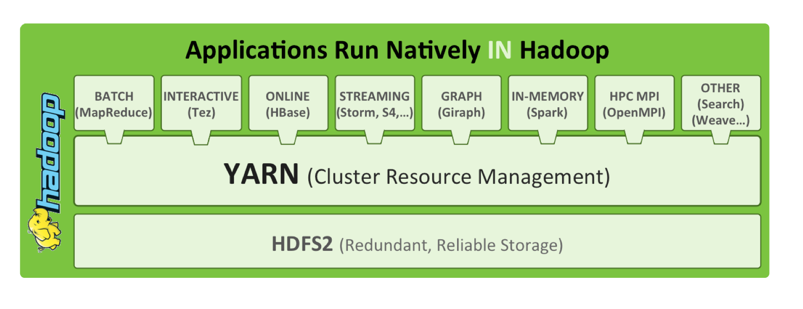

Your browser doesn't support the features required by impress.js, so you are presented with a simplified version of this presentation.
For the best experience please use the latest Chrome, Safari or Firefox browser.
Big Data with Hadoop
Hadoop: Big Data Ecosystem
Fundamental concepts
and
Major composants
What is Big Data? The 3 V’s
-
Volume
A significant amount of data, more than easily handled by a single database, computer or spreadsheet
-
Velocity
Process incoming data and get answers quickly enough, as to not delay research or critical decision making (each years more true)
-
Variety
Different kind of information, with a mix of data types and varying degrees of structures
-
Veracity, Value, ...
because size matter
Volume
Facebook 400 PB data lake
Criteo 900 m2 & 5 000 servers datacenter
after is too late
Velocity
Fast processing - Google queries are resolved in a subsecond process
Batch processing - One night to analyze the day
RDBMs got it all wrong
Variety
Classical distribution in company
20 % structured
80 % unstructured
there is value everywhere
Data Composition
Structured: RDBMS
Unstructured: text, image
Semi-structured: JSON, XML
Why Big Data ?
Data is the new Oil!
The origin of love
Doug Cutting's Nutch (2002)
GoogleFS (2003)
Google MR Algorithm (2004)
Doug Cutting Hadoop (2004)
Apache Hadoop (2008)
Hadoop 1.x
HDFS
MapReduce
Pig, Hive, Oozie, HBase, ...
Hadoop 2.x
HDFS + YARN + ?MapReduce?

Cluster OS

Hadoop distributions
- HDP: Hortonworks distribution
- CDH: Cloudera distribution
- MapR: MapR distribution
- Pivotal, IBM, Oracle…
Why 80% of HadoopSummit attendants carry OSX laptops.
A proper Environment
- Mac OSX, Linux, Linux VM
- 64 bits OS, at least 8GB, although 16GB is preferred
- GIT or Mercurial
- Text Editor: atom.io, SublimeText
- Java Editor: IntelliJ IDEA, Eclipse
- Dark Theme
It all depends on the project culture
Where to search
- Google
- Blogs
- Issues Trackers
- Source code: GitHub & GrepCode
- Wikis
- Official Websites
- Cloudera, HW, Pivotal... documentations
Now is the time for questions before we move further
the only limit is your imagination